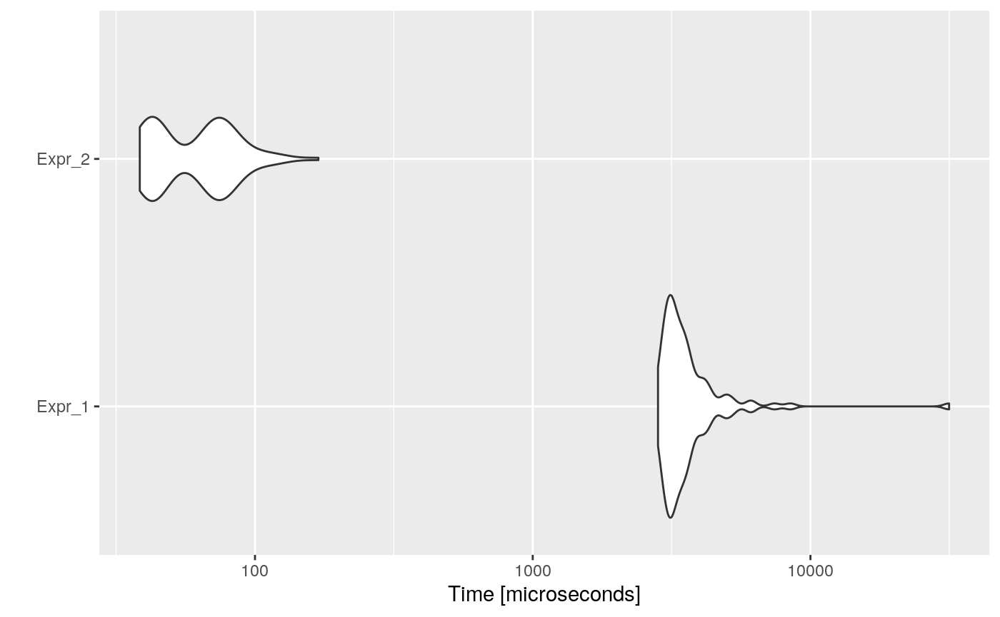

Dead Code Elimination is an optimization that removes code which does not affect the program results. You might wonder why someone would write this type of source code, but it can easily creep into large, long-lived programs even at the source code level. Removing such code has several benefits: it shrinks program size and it allows the running program to avoid executing irrelevant operations, which reduces its running time. It can also enable further optimizations by simplifying program structure.
For example, consider the following code:
foo <- function() { a <- 24 if (a > 25) { return(25) a <- 25 # dead code } return(a) b <- 24 # dead code return(b) # dead code }
In functions, after calling return, the following code would not be executed, so it is dead code and can be eliminated. In this example, resulting in:
Also, after constant propagating and folding we would get:
foo <- function() { a <- 24 if (FALSE) { # dead code return(25) # dead code } # dead code return(a) }
So it could be reduced to:
foo <- function() { a <- 24 return(a) }
This dead code optimizer also removes code after next or break calls.
Consider the following example:
code <- paste( "i <- 0", "n <- 1000", "while (i < n) {", " if (TRUE) {", " i <- i + 1", " } else {", " i <- i - 1", " }", "}", sep = "\n" ) cat(code)
## i <- 0
## n <- 1000
## while (i < n) {
## if (TRUE) {
## i <- i + 1
## } else {
## i <- i - 1
## }
## }Then, the automatically optimized code would be:
opt_code <- opt_dead_code(list(code)) cat(opt_code$codes[[1]])
## i <- 0
## n <- 1000
## while (i < n) {
## i <- i + 1
## }And if we measure the execution time of each one, and the speed-up:
bmark_res <- microbenchmark({ eval(parse(text = code)) }, { eval(parse(text = opt_code)) }) autoplot(bmark_res)

speed_up(bmark_res)
## Min. 1st Qu. Median Mean 3rd Qu. Max.
## Expr_2 81.07803 76.37139 70.88553 68.57435 54.16527 186.2943The opt_dead_code optimizer performs two main tasks:
All the code, that is equally-nested, found after a break, next, or return call is removed. Something important to note is that it assumes that the return function has not been overwritten.
This task has sub-items:
Remove FALSE whiles: while (FALSE) { expr } expressions are removed from the code.
Remove FALSE ifs: if (FALSE) { expr } expressions are removed. And if (FALSE) { expr1 } else { expr2 } is replaced by expr2.
Replace TRUE ifs: if (TRUE) { expr } is replaced by expr. And if (TRUE) { expr1 } else { expr2 } is replaced by expr1.